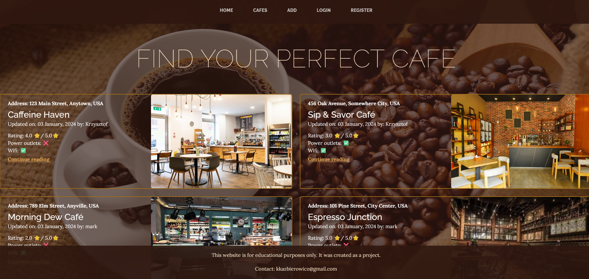
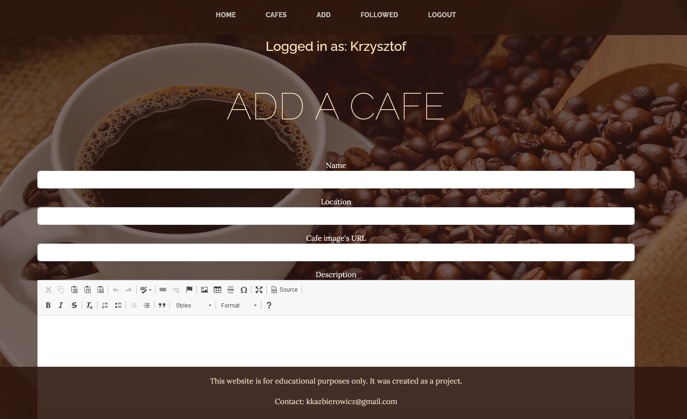
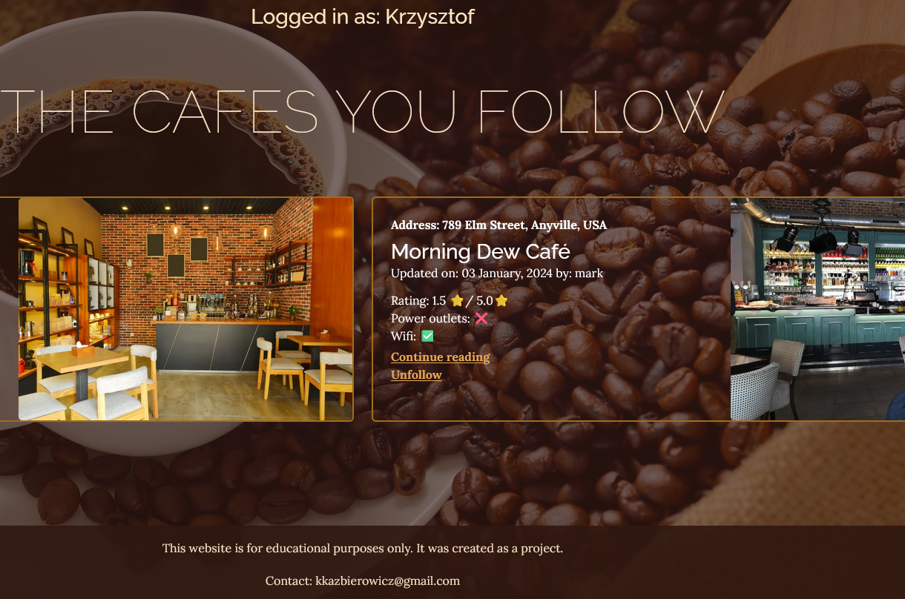

Introduction
I created this webapp in python using modules such as Flask, SQLalchemy, WTForms. Additionaly all the user and cafe data is stored in PostgreSQL format.
The frontend side of this webapp was mostly constructed with templates provided by Bootstrap
User authentication
Upon registration, your password becomes encrypted with the help of the Werkzeug module, which hashes the password before storing it in the database, making it secure during a data breach
Functions for authenticated users
Logged in users gain the ability to create new posts and share their favorite place to have a coffee. I've also implemented a rating system so that every authenticated user can give his opinion about an entry
The poster of an entry can delete it if the ratings on his favorite cafe didn't meet his expectations
One of the other more important features to mention is the user's ability to follow his favorite cafes
